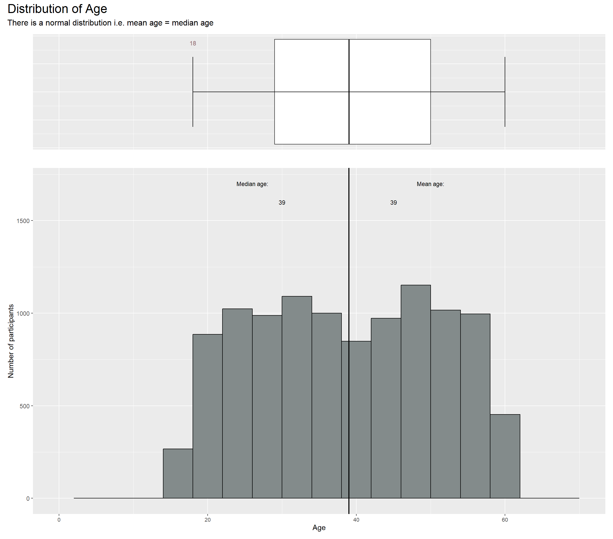
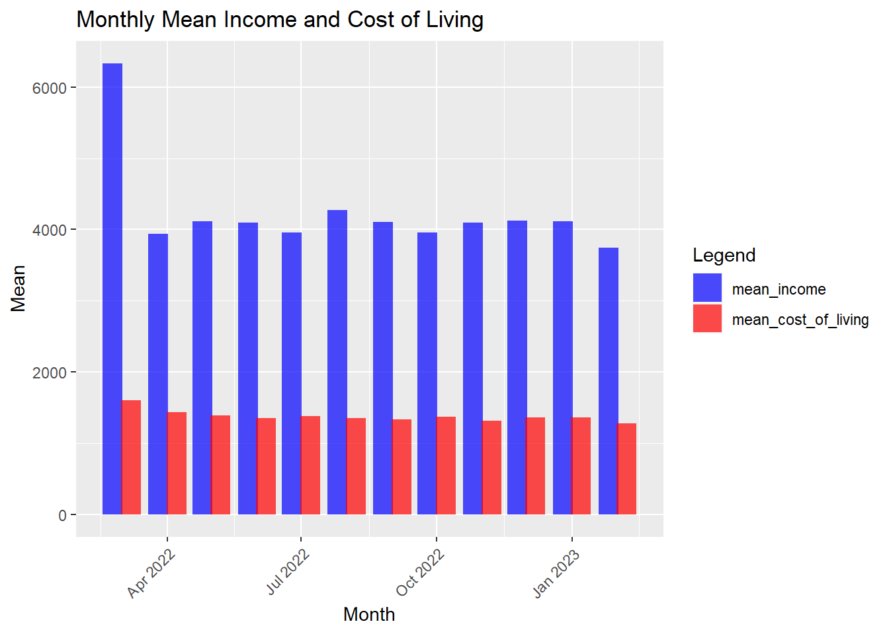
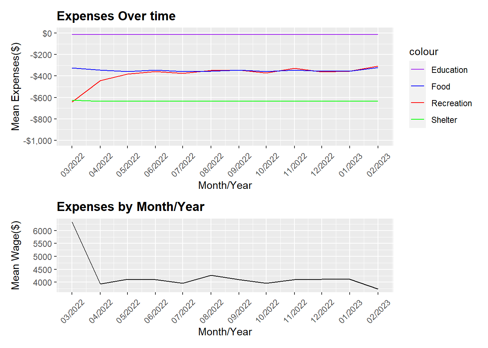

pacman::p_load(plotly, ggstatsplot, knitr, patchwork, ggdist, ggthemes, tidyverse,gt,rstatix,ggpmisc,ggridges,gganimate,viridis,ggiraph,reshape2,scales)Take-Home_Ex01
1. Objective
This exercise aims to reveal the demographic, financial characteristics and hidden patterns of the City of Engagement, using static and interactive statistical graphics methods. The data will be processed using appropriate tidyverse packages and visualization will be designed using ggplot2 and its extensions.
2. Data Source
For the purpose of this study, two data sets will be used. They are
Participants.csv
Contains information about the residents of City of Engagement that have agreed to participate in this study.
FinancialJournal.csv
Contains information about financial transactions.
3. Data Preparation
3.1 Install and launching R packages
The code chunk below uses p_load() of pacman package to check if packages are installed in the computer. If they are, then they will be launched into R. The R packages installed are:
plotly: R library for plotting interactive statistical graphs.
ggstatsplot: Used for creating graphics with details from statistical tests.
gganimate
gifski
knitr: Used for dynamic report generation
patchwork: Used to combine plots
ggdist: Used for visualisation distribution and uncertainty
ggthemes: Provide additional themes for ggplot2
tidyverse: a family of modern R packages specially designed to support data science, analysis and communication task including creating static statistical graphs.
3.2 Importing the Data
participants <- read_csv("data/Participants.csv")
financial <- read_csv("data/FinancialJournal.csv")3.3 Data Wrangling
Check for missing values in each column in participants data
# Check for missing values in each column
colSums(is.na(participants)) participantId householdSize haveKids age educationLevel
0 0 0 0 0
interestGroup joviality
0 0 Check for missing values in each column in financial data
# Check for missing values in each column
colSums(is.na(financial))participantId timestamp category amount
0 0 0 0 Looking at the data below, there are a few data issues
head(participants)# A tibble: 6 × 7
participantId householdSize haveKids age educationLevel interestGroup
<dbl> <dbl> <lgl> <dbl> <chr> <chr>
1 0 3 TRUE 36 HighSchoolOrCollege H
2 1 3 TRUE 25 HighSchoolOrCollege B
3 2 3 TRUE 35 HighSchoolOrCollege A
4 3 3 TRUE 21 HighSchoolOrCollege I
5 4 3 TRUE 43 Bachelors H
6 5 3 TRUE 32 HighSchoolOrCollege D
# ℹ 1 more variable: joviality <dbl>head(financial)# A tibble: 6 × 4
participantId timestamp category amount
<dbl> <dttm> <chr> <dbl>
1 0 2022-03-01 00:00:00 Wage 2473.
2 0 2022-03-01 00:00:00 Shelter -555.
3 0 2022-03-01 00:00:00 Education -38.0
4 1 2022-03-01 00:00:00 Wage 2047.
5 1 2022-03-01 00:00:00 Shelter -555.
6 1 2022-03-01 00:00:00 Education -38.0ISSUE 1: INACCUATE DATA/MODELLING FORMAT
participantId is in <dbl> format. It needs to be converted to <chr>
participants$participantId <- as.character(participants$participantId)
str(participants)spc_tbl_ [1,011 × 7] (S3: spec_tbl_df/tbl_df/tbl/data.frame)
$ participantId : chr [1:1011] "0" "1" "2" "3" ...
$ householdSize : num [1:1011] 3 3 3 3 3 3 3 3 3 3 ...
$ haveKids : logi [1:1011] TRUE TRUE TRUE TRUE TRUE TRUE ...
$ age : num [1:1011] 36 25 35 21 43 32 26 27 20 35 ...
$ educationLevel: chr [1:1011] "HighSchoolOrCollege" "HighSchoolOrCollege" "HighSchoolOrCollege" "HighSchoolOrCollege" ...
$ interestGroup : chr [1:1011] "H" "B" "A" "I" ...
$ joviality : num [1:1011] 0.00163 0.32809 0.39347 0.13806 0.8574 ...
- attr(*, "spec")=
.. cols(
.. participantId = col_double(),
.. householdSize = col_double(),
.. haveKids = col_logical(),
.. age = col_double(),
.. educationLevel = col_character(),
.. interestGroup = col_character(),
.. joviality = col_double()
.. )
- attr(*, "problems")=<externalptr> financial$participantId <- as.character(financial$participantId)
#str(financial)ISSUE 2: CHANGE TIMESTAMP TO USABLE DATA
Extract the month and year using lubridate.
#financial$month_year <- format(financial$timestamp, "%Y/%m")
financial$month_year <- floor_date(as.POSIXct(financial$timestamp), unit = "month")
financial$month_year <- format(financial$month_year, format = "%m/%Y")
# Convert month_year to date format
financial$month_year <- as.Date(paste0("01/", financial$month_year), format = "%d/%m/%Y")
head(financial)# A tibble: 6 × 5
participantId timestamp category amount month_year
<chr> <dttm> <chr> <dbl> <date>
1 0 2022-03-01 00:00:00 Wage 2473. 2022-03-01
2 0 2022-03-01 00:00:00 Shelter -555. 2022-03-01
3 0 2022-03-01 00:00:00 Education -38.0 2022-03-01
4 1 2022-03-01 00:00:00 Wage 2047. 2022-03-01
5 1 2022-03-01 00:00:00 Shelter -555. 2022-03-01
6 1 2022-03-01 00:00:00 Education -38.0 2022-03-01ISSUE 3: DUPLICATES FOUND IN DATA
[1] 1113[1] 0[1] 1512523ISSUE 4: DATA IS SEGREGATED BY INDIVDUAL ENTRIES
Group the entries by participants taking into consideration time and category and summing up the amount.
# Group by participant_id and month_year, subgroup by category, then summarize by amount
new_financial <- financial_unique %>%
group_by(participantId, month_year, category) %>%
summarise(total_amount = sum(amount)) %>%
mutate(total_amount = round(total_amount, 2))
head(new_financial)# A tibble: 6 × 4
# Groups: participantId, month_year [2]
participantId month_year category total_amount
<chr> <date> <chr> <dbl>
1 0 2022-03-01 Education -38.0
2 0 2022-03-01 Food -268.
3 0 2022-03-01 Recreation -349.
4 0 2022-03-01 Shelter -555.
5 0 2022-03-01 Wage 11932.
6 0 2022-04-01 Education -38.0# Pivot the table so that the categories appear as columns
new_financial_wide <- new_financial %>%
pivot_wider(names_from = category, values_from = total_amount)
# Check if any columns has missing value
colSums(is.na(new_financial_wide)) participantId month_year Education Food Recreation
0 0 7673 0 1199
Shelter Wage RentAdjustment
131 0 10619 # replace missing values with 0
new_financial_wide <- new_financial_wide %>%
mutate_all(~replace_na(., 0))
head(new_financial_wide)# A tibble: 6 × 8
# Groups: participantId, month_year [6]
participantId month_year Education Food Recreation Shelter Wage
<chr> <date> <dbl> <dbl> <dbl> <dbl> <dbl>
1 0 2022-03-01 -38.0 -268. -349. -555. 11932.
2 0 2022-04-01 -38.0 -266. -219. -555. 8637.
3 0 2022-05-01 -38.0 -265. -383. -555. 9048.
4 0 2022-06-01 -38.0 -257. -466. -555. 9048.
5 0 2022-07-01 -38.0 -270. -1070. -555. 8637.
6 0 2022-08-01 -38.0 -262. -314. -555. 9459.
# ℹ 1 more variable: RentAdjustment <dbl>ISSUE 5: DATA DOES NOT SHOW FINANCIAL HEALTH AND COST OF LIVING
Financial Health = Sum (Wage + Education + Shelter + Recreation + Food + RentAdjustment)
new_financial_wide$Financial_health <- rowSums(new_financial_wide[, c("Wage", "Education","Shelter","Recreation","Food","RentAdjustment" )], na.rm = TRUE)
head(new_financial_wide)# A tibble: 6 × 9
# Groups: participantId, month_year [6]
participantId month_year Education Food Recreation Shelter Wage
<chr> <date> <dbl> <dbl> <dbl> <dbl> <dbl>
1 0 2022-03-01 -38.0 -268. -349. -555. 11932.
2 0 2022-04-01 -38.0 -266. -219. -555. 8637.
3 0 2022-05-01 -38.0 -265. -383. -555. 9048.
4 0 2022-06-01 -38.0 -257. -466. -555. 9048.
5 0 2022-07-01 -38.0 -270. -1070. -555. 8637.
6 0 2022-08-01 -38.0 -262. -314. -555. 9459.
# ℹ 2 more variables: RentAdjustment <dbl>, Financial_health <dbl>Cost_of_living = Sum(Education + Shelter + Recreation + Food)
new_financial_wide$Cost_of_living <- rowSums(new_financial_wide[,c("Education","Shelter","Recreation","Food")], na.rm = TRUE)
new_financial_wide$Cost_of_living <- new_financial_wide$Cost_of_living * -1
head(new_financial_wide)# A tibble: 6 × 10
# Groups: participantId, month_year [6]
participantId month_year Education Food Recreation Shelter Wage
<chr> <date> <dbl> <dbl> <dbl> <dbl> <dbl>
1 0 2022-03-01 -38.0 -268. -349. -555. 11932.
2 0 2022-04-01 -38.0 -266. -219. -555. 8637.
3 0 2022-05-01 -38.0 -265. -383. -555. 9048.
4 0 2022-06-01 -38.0 -257. -466. -555. 9048.
5 0 2022-07-01 -38.0 -270. -1070. -555. 8637.
6 0 2022-08-01 -38.0 -262. -314. -555. 9459.
# ℹ 3 more variables: RentAdjustment <dbl>, Financial_health <dbl>,
# Cost_of_living <dbl>ISSUE 6: AGE DATA IS DISAGGREGATED
Bin age data by groups of 10.
participants <- participants %>%
mutate(age_bin = cut(age,
breaks = c(seq(max(age), min(age) - 10, -10), min(age)),
right = FALSE,
include.lowest = TRUE,
labels = NULL))
# Replace the numeric bin labels with age ranges
participants$age_bin <- sub("(\\d+)-(\\d+)", "\\1-\\2", as.character(participants$age_bin))
participants$age_bin[participants$age_bin == paste0(max(participants$age_bin), "-")] <- paste0("<= ", max(as.numeric(levels(participants$age_bin)))-1)
# Display the first 10 rows of the new data frame with age_bin column
head(participants, 10)# A tibble: 10 × 8
participantId householdSize haveKids age educationLevel interestGroup
<chr> <dbl> <lgl> <dbl> <chr> <chr>
1 0 3 TRUE 36 HighSchoolOrCollege H
2 1 3 TRUE 25 HighSchoolOrCollege B
3 2 3 TRUE 35 HighSchoolOrCollege A
4 3 3 TRUE 21 HighSchoolOrCollege I
5 4 3 TRUE 43 Bachelors H
6 5 3 TRUE 32 HighSchoolOrCollege D
7 6 3 TRUE 26 HighSchoolOrCollege I
8 7 3 TRUE 27 Bachelors A
9 8 3 TRUE 20 Bachelors G
10 9 3 TRUE 35 Bachelors D
# ℹ 2 more variables: joviality <dbl>, age_bin <chr>ISSUE 7: PARTICIPANTS DATA AND FINANCIAL DATA ARE SEPARATED
Combine the two tables together by participantId
combined_table <- merge(participants, new_financial_wide, by = "participantId")
head(combined_table) participantId householdSize haveKids age educationLevel interestGroup
1 0 3 TRUE 36 HighSchoolOrCollege H
2 0 3 TRUE 36 HighSchoolOrCollege H
3 0 3 TRUE 36 HighSchoolOrCollege H
4 0 3 TRUE 36 HighSchoolOrCollege H
5 0 3 TRUE 36 HighSchoolOrCollege H
6 0 3 TRUE 36 HighSchoolOrCollege H
joviality age_bin month_year Education Food Recreation Shelter Wage
1 0.001626703 [30,40) 2022-03-01 -38.01 -268.34 -348.72 -554.99 11931.95
2 0.001626703 [30,40) 2022-04-01 -38.01 -265.86 -219.43 -554.99 8636.88
3 0.001626703 [30,40) 2022-05-01 -38.01 -264.62 -383.01 -554.99 9048.16
4 0.001626703 [30,40) 2022-06-01 -38.01 -256.97 -465.68 -554.99 9048.16
5 0.001626703 [30,40) 2022-07-01 -38.01 -270.21 -1069.54 -554.99 8636.88
6 0.001626703 [30,40) 2022-08-01 -38.01 -261.84 -314.14 -554.99 9459.44
RentAdjustment Financial_health Cost_of_living
1 0 10721.89 1210.06
2 0 7558.59 1078.29
3 0 7807.53 1240.63
4 0 7732.51 1315.65
5 0 6704.13 1932.75
6 0 8290.46 1168.984. Data Analysis
4.1 Demographic Analysis
4.1.1 Income Distribution
We will first take a look at the Income Distribution using histogram and boxplot.
Show the code
#computing summary statistics of mean, median and lower and upper whiskers in boxplot
wage_mean <- round(mean(combined_table$Wage))
wage_median <- round(median(combined_table$Wage))
ymax <- as.numeric(round((IQR(combined_table$Wage)*1.5) +
quantile(combined_table$Wage,0.75)))
ymin <- as.integer(min(combined_table$Wage))
#plotting histogram
h_wage <- ggplot(data = combined_table, aes(x = Wage)) +
geom_histogram(color="black", fill="azure4", binwidth = 500) +
scale_x_continuous(limits = c(0,25000), labels = scales::comma) +
labs(x = "Wage", y = "Number of participants") +
geom_vline(aes(xintercept = wage_mean), col="darkblue", linewidth=0.75) +
annotate("text", x=5500, y=1700, label="Mean wage:",
size=2, color="darkblue") +
annotate("text", x=5500, y=1600, label=format(wage_mean, big.mark = ","),
size=2, color="darkblue") +
geom_vline(aes(xintercept = wage_median), col="lightpink4", linewidth=0.75) +
annotate("text", x=2000, y=1700, label="Median wage",
size=2, color="lightpink4") +
annotate("text", x=2000, y=1600, label=format(wage_median, big.mark = ","),
size=2, color="lightpink4") +
theme(axis.text.x = element_text(size=8))
#plotting boxplot
b_wage <- ggplot(data = combined_table, aes(y = Wage)) +
geom_boxplot(outlier.colour="firebrick", outlier.shape=16,
outlier.size=0.6, notch=FALSE, width = 0.4) +
coord_flip() + labs(y = "", x = "") +
scale_y_continuous(limits = c(0,25000), labels = scales::comma) +
theme(axis.text = element_blank(), axis.ticks = element_blank()) +
stat_boxplot(geom="errorbar", width=0.45) +
annotate("text", x=0.35, y=ymax, label=format(ymax, big.mark = ","),
size=2, color="lightpink4") +
annotate("text", x=0.35, y=ymin, label=format(ymin, big.mark = ","),
size=2, color="lightpink4") +
annotate("text", x=-0.25, y=3800, label=format(wage_median, big.mark = ","),
size=2, color="lightpink4") +
annotate("text", x=-0.25, y=2000, label="Median wage =",
size=2, color="lightpink4")
# combine the 2 plots
wage_distri <- b_wage / h_wage + plot_layout(heights = c(1, 4))
wage_distri + plot_annotation(title = "Distribution of Wage",
subtitle = str_wrap("There is a right-skewed distribution i.e. mean wage > median wage. There is also a large number of outliers (wage >$9,110).", width =60),
theme = theme(
plot.title = element_text(size = 18),
plot.subtitle = element_text(size = 12)))
The shape of the wage distribution shows that there is an income inequality in the city.
meanwage_table <- combined_table %>%
group_by(participantId) %>%
summarize(mean_wage = mean(Wage))
head(meanwage_table)# A tibble: 6 × 2
participantId mean_wage
<chr> <dbl>
1 0 9151.
2 1 8031.
3 10 6609.
4 100 3910.
5 1000 2441.
6 1001 3853.Show the code
#| echo: false
#| fig-width: 4
#| fig-height: 4
qq <- ggplot(meanwage_table,
aes(sample=mean_wage))+
stat_qq() +
stat_qq_line()
sw_t <- meanwage_table %>%
shapiro_test(mean_wage) %>%
gt() #make it to gt format to give a nice table
tmp <- tempfile(fileext = '.png')
gtsave(sw_t, tmp)
table_png <- png::readPNG(tmp,native=TRUE) #sw_t cant be recognised by patchwork so change it to png
qq + table_png
Using the Normal Quartile Plot (Q-Q plot), we can see that the points deviate significantly from the straight diagonal line. Looking at the results of the Shaprio-test above suggest that there is sufficient statistical evidence to reject the null hypothesis at 95% confidence. Thus, the set of data is not normally distributed.
Also, comparing this to the Lorenze curve, we can see that the city falls under the “More Unequal”, thereby proving that the city has high level of income inequality.
4.1.2
Income by Age
Let’s find out of there if income is affected by age. When you are older, you are likely to earn more.
To compare the income level across ages, we will test the null hypothesis:
H0: the mean income across different age groups are the same H1: the mean income across different age groups are different
To start the confirmatory data analysis, we first perform the normality assumption test for the distribution of income and age.
Show the code
#computing summary statistics of mean, median and lower and upper whiskers in boxplot
age_mean <- round(mean(combined_table$age))
age_median <- round(median(combined_table$age))
ymax <- as.numeric(round((IQR(combined_table$age)*1.5) +
quantile(combined_table$age,0.75)))
ymin <- as.integer(min(combined_table$age))
#plotting histogram
h_age <- ggplot(data = combined_table, aes(x = age)) +
geom_histogram(color="black", fill="azure4", binwidth = 4) +
scale_x_continuous(limits = c(0,70), labels = scales::comma) +
labs(x = "Age", y = "Number of participants") +
geom_vline(aes(xintercept = age_mean), col="black", linewidth=0.75) +
annotate("text", x=45, y=1700, label="Mean age:",
size=2, color="black") +
annotate("text", x=45, y=1600, label=format(age_mean, big.mark = ","),
size=2, color="black") +
geom_vline(aes(xintercept = age_median), col="black", linewidth=0.75) +
annotate("text", x=30, y=1700, label="Median age",
size=2, color="black") +
annotate("text", x=30, y=1600, label=format(age_median, big.mark = ","),
size=2, color="black") +
theme(axis.text.x = element_text(size=8))
#plotting boxplot
b_age <- ggplot(data = combined_table, aes(y = age)) +
geom_boxplot(outlier.colour="firebrick", outlier.shape=16,
outlier.size=1, notch=FALSE) +
coord_flip() + labs(y = "", x = "") +
scale_y_continuous(limits = c(0,70), labels = scales::comma) +
theme(axis.text = element_blank(), axis.ticks = element_blank()) +
stat_boxplot(geom="errorbar", width=0.5) +
annotate("text", x=0.35, y=ymax, label=format(ymax, big.mark = ","),
size=2, color="lightpink4") +
annotate("text", x=0.35, y=ymin, label=format(ymin, big.mark = ","),
size=2, color="lightpink4")
age_distri <- b_age / h_age + plot_layout(heights = c(1, 4))
age_distri + plot_annotation(title = "Distribution of Age",
subtitle = "There is a normal distribution i.e. mean age = median age",
theme = theme(
plot.title = element_text(size = 18),
plot.subtitle = element_text(size = 12)))
Show the code
wage_age_distri <- (wage_distri | age_distri) + plot_layout(widths = c(8,8))
wage_age_distri + plot_annotation(title = "Distribution of Income and Age",
theme = theme(
plot.title = element_text(size = 16)))
Distribution by Income and Age
Normality assumption test for Income and Age.
Based on the Shapiro test, the p-value < alpha value of 0.05, thus there is sufficient statistical evidence to conclude that the distribution of income and age are not normally distributed. Thus we will use the non-parametric test.
Plot the qqplot for income and age
Show the code
#| echo: false
#| fig-width: 4
#| fig-height: 4
# Create age table
unique_participants <- unique(subset(combined_table, select = c("participantId", "age")))
head(unique_participants) participantId age
1 0 36
13 1 25
25 10 48
37 100 29
49 1000 56
61 1001 49Show the code
qq_age <- ggplot(unique_participants,
aes(sample=age))+
stat_qq() +
stat_qq_line()
sw_t_age <- unique_participants %>%
shapiro_test(age) %>%
gt() #make it to gt format to give a nice table
tmp_age <- tempfile(fileext = '.png')
gtsave(sw_t_age, tmp_age)
table_png_age <- png::readPNG(tmp_age,native=TRUE) #sw_t cant be recognised by patchwork so change it to png
qq_age + table_png_ageOneway ANOVA Test
To test the null hypothesis, we performed the non-parametric test.
ggbetweenstats(
data = combined_table,
x = age_bin,
y = Wage,
type = "np",
mean.ci = TRUE,
pairwise.comparisons = TRUE,
pairwise.display = "ns",
p.adjust.method = "fdr",
messages = FALSE,
ylim = c(0, 25000),
breaks = seq(0, 25000, 5000)
) +
ggtitle("Oneway ANNOVA - Income across different age")
The Kruskal-Wallis Test p-value is lower than the alpha values, thus there is sufficient statistical evidence to reject the null hypothesis and infer that the mean income across age is not the same.
Higher income median for those age 30-40. After the age of 40, the increase in age does not correspond with the increase in income. We can also see that the 2 highest points are from the opposite ends of the age spectrum. Even though these are outliers, this suggests that for the high-income tier, age is not the limiting factor. An individual does not have to be old to earn a higher income.
4.1.3 Financial Health Observation
Cumulative Financial Health
# Create a data frame
df_totalfh <- combined_table %>%
group_by(month_year) %>%
summarise(total_fh = sum(Financial_health))
head(df_totalfh)# A tibble: 6 × 2
month_year total_fh
<date> <dbl>
1 2022-03-01 4832812.
2 2022-04-01 2204851.
3 2022-05-01 2403220.
4 2022-06-01 2421291.
5 2022-07-01 2272492.
6 2022-08-01 2574129.Show the code
library(scales)
# calculate cumulative financial health
df_totalfh <- df_totalfh %>%
mutate(cumulative_fh = cumsum(total_fh))
head(df_totalfh)# A tibble: 6 × 3
month_year total_fh cumulative_fh
<date> <dbl> <dbl>
1 2022-03-01 4832812. 4832812.
2 2022-04-01 2204851. 7037663.
3 2022-05-01 2403220. 9440883.
4 2022-06-01 2421291. 11862173.
5 2022-07-01 2272492. 14134666.
6 2022-08-01 2574129. 16708794.Show the code
# Calculate y-axis breaks and labels
y_breaks <- pretty_breaks(n = 5)(range(df_totalfh$cumulative_fh))
y_labels <- dollar_format(prefix = "$")(y_breaks)
# plot graph
ggplot(data = df_totalfh, aes(x = month_year, y = cumulative_fh)) +
geom_line() +
labs(x = "Month/Year", y = "Cumulative Financial Health", title = "Cumulative Financial Health Over Time") +
stat_summary(geom = "line", fun = "cumsum", linetype = "dashed") +
scale_y_continuous(breaks = y_breaks, labels = y_labels) +
scale_x_date(date_breaks = "1 month", date_labels = "%m/%Y") +
theme(plot.title = element_text(face = "bold"))From the figure above, we can tell that the city has cumulative savings across the months.
Financial Health vs mean financial health (boxplot and line)
p_fh <- ggplot(data = df_totalfh, aes(x = month_year, y = total_fh)) +
geom_boxplot() +
theme_minimal() +
scale_fill_brewer(palette = "Dark2") +
labs(title = "Financial Health Over Time",
y = "Financial Health",
x = "Month/Year") +
theme(text = element_text(family = "Garamond"),
plot.title = element_text(hjust = 0.2, size = 12, face = 'bold'),
plot.margin = margin(20, 20, 20, 20),
legend.position = "bottom",
axis.text = element_text(size = 8, face = "bold"),
axis.text.x = element_text(angle = 90, vjust = 0.5, hjust=1),
axis.title.x = element_text(hjust = 0.5, size = 12, face = "bold", color = "#899499"),
axis.title.y = element_text(hjust = 0.5, size = 12, face = "bold", color = "#899499"))
ggplotly(p_fh) # Use tooltip to show x and y valuesExpenses overtime
Show the code
# group the expenses by month year
expenses_grouped <- combined_table %>%
group_by(month_year) %>%
summarize(total_recreation = mean(Recreation),
total_food = mean(Food),
total_shelter = mean(Shelter),
total_education = mean(Education))
# plot the data using ggplot2
p_expense <- ggplot(expenses_grouped, aes(x = month_year)) +
geom_line(aes(y = total_recreation, color = "Recreation")) +
geom_line(aes(y = total_food, color = "Food")) +
geom_line(aes(y = total_shelter, color = "Shelter")) +
geom_line(aes(y = total_education, color = "Education")) +
labs(x = "Month/Year", y = "Mean Expenses($)") +
scale_y_continuous(limits = c(-1000, 0),
breaks = seq(-1000, 0, 2*100),
labels = dollar_format(prefix = "$")) +
scale_x_date(date_breaks = "1 month", date_labels = "%m/%Y") +
ggtitle("Expenses Over time") +
scale_color_manual(values = c("Recreation" = "red",
"Food" = "blue",
"Shelter" = "green",
"Education" = "purple")) +
theme(plot.title = element_text(face = "bold"),
plot.margin = margin(0, 0, 0, 0))
p_expense
expenses_grouped <- combined_table %>%
group_by(month_year) %>%
summarize(total_recreation = mean(Recreation),
total_food = mean(Food),
total_shelter = mean(Shelter),
total_education = mean(Education)) %>%
pivot_longer(cols = c(total_recreation, total_food, total_shelter, total_education), names_to = "expense_type", values_to = "expense")
head(expenses_grouped)# A tibble: 6 × 3
month_year expense_type expense
<date> <chr> <dbl>
1 2022-03-01 total_recreation -643.
2 2022-03-01 total_food -324.
3 2022-03-01 total_shelter -625.
4 2022-03-01 total_education -14.2
5 2022-04-01 total_recreation -443.
6 2022-04-01 total_food -346. #CHECK WHY CANT PLOT
# ggplot(data = expenses_grouped, aes(x = expense, y = expense_type, fill = after_stat(x))) +
#
# geom_density_ridges_gradient(scale = 3, rel_min_height = 0.01) +
#
# theme_minimal() +
#
# labs(title = 'Expenses by Category Over Time: {frame_time}',
# y = "Type of Expense",
# x = "Total Expense") +
#
# theme(legend.position="none",
# text = element_text(family = "Garamond"),
# plot.title = element_text(face = "bold", size = 12),
#
# axis.title.x = element_text(size = 10, hjust = 1),
# axis.title.y = element_text(size = 10),
# axis.text = element_text(size = 8)) +
#
# scale_fill_viridis(name = "expense", option = "D") +
#
# transition_time("month_year") +
# ease_aes('linear')Plotted the costs over time and it showed that food, rent and education remained stable over time, meaning these costs are fixed despite any fluations in income. In contrast, recreation expenses is high in March and decreases significantly from March to April and plateaus to a stable rate.
Thus, we can conclude that recreation increases if there is an increase in income but will remain low if there is low income. Income overtime
Show the code
# group the wage by month year
wage_grouped <- combined_table %>%
group_by(month_year) %>%
summarize(mean_wage_bymonth = mean(Wage))
# plot the data using ggplot2
p_meanwage <- ggplot(wage_grouped, aes(x = month_year)) +
geom_line(aes(y = mean_wage_bymonth)) +
labs(x = "Month/Year", y = "Mean Wage($)") +
scale_x_date(date_breaks = "1 month", date_labels = "%m/%Y") +
ggtitle("Expenses by Month/Year")expenses_wage <- p_expense + p_meanwage + plot_layout(heights = c(80, 50))
expenses_wage
In March, the mean income is peaked and dips significantly in April. Post April, the income remains relatively stable and starts to increase slightly in August. The fluctuations in the financial health and income is directly proportionate.
As this is an agricultural city, the pay could be affected by the seasons and harvest.
Wage vs Cost of Living overtime
# Creating a table with Wage and Cost of Living by month_year
# Group the data by month and find the corresponding means
df_monthly <- combined_table %>%
group_by(month_year) %>%
summarise(mean_income = mean(Wage),
mean_cost_of_living = mean(Cost_of_living))
# Melt the data frame to create a long format
df_monthly_melt <- melt(df_monthly, id.vars = "month_year", variable.name = "variable", value.name = "value")#CHECK FOR THE XAXIS SCALE
# Plot using ggplot2
ggplot(df_monthly_melt, aes(x = month_year, y = value, fill = variable)) +
geom_bar(stat = "identity", position = position_dodge(width = 25), alpha = 0.7) +
scale_fill_manual(name = "Legend", values = c("mean_income" = "blue", "mean_cost_of_living" = "red")) +
labs(x = "Month", y = "Mean", title = "Monthly Mean Income and Cost of Living") +
scale_x_date(guide = guide_axis(angle = 45))
theme(axis.text.x = element_text(hjust = 0.4, vjust = 0.5, size = 5)) List of 1
$ axis.text.x:List of 11
..$ family : NULL
..$ face : NULL
..$ colour : NULL
..$ size : num 5
..$ hjust : num 0.4
..$ vjust : num 0.5
..$ angle : NULL
..$ lineheight : NULL
..$ margin : NULL
..$ debug : NULL
..$ inherit.blank: logi FALSE
..- attr(*, "class")= chr [1:2] "element_text" "element"
- attr(*, "class")= chr [1:2] "theme" "gg"
- attr(*, "complete")= logi FALSE
- attr(*, "validate")= logi TRUELooking at the wage vs cost of living, we can see that on average, most citizens can cope with their cost of living as their mean wage (blue bars) is higher than the mean cost of living (red bars). Most citizens should still have savings monthly.
Observation on Education Level
Education affects financial health and birth rate
# Create a factor with the education levels in the desired order
edu_levels <- c("Low", "HighSchoolOrCollege", "Bachelors", "Graduate")
combined_table$educationLevel <- factor(combined_table$educationLevel, levels = edu_levels)
# Create a box plot with separate panels for individuals with and without kids
p_fh_kids <- ggplot(combined_table, aes(x = educationLevel, y = Financial_health, fill = haveKids)) +
geom_boxplot() +
stat_summary(aes(group = haveKids, color = haveKids), fun = mean, geom = "line", size = 0.5) + # add mean lines
stat_boxplot(geom='errorbar', width=0.25, coef=1.5, size=0.5) + # add error bars
scale_fill_manual(name = "haveKids", values = c("FALSE" = "grey", "TRUE" = "orange")) +
labs(title = "Boxplot of Financial Health and Education by Kids", x = "Education", y = "Financial Health") +
facet_wrap(~haveKids, ncol = 2) +
theme_bw() +
theme(axis.text.x = element_text(angle = 45, hjust = 1))
# Display the plot
p_fh_kids
We observe here that education is positively correlated to wage and financial health of the citizens. The higher the education level, the better the financial health. Also, we can see that citizen with better financial health have kids.
Observation on Joviality
Show the code
# Select columns by name for the correlation matrix
cols <- c("joviality", "Wage", "Financial_health", "Cost_of_living", "age")
# Plot the ggcorrmat
ggstatsplot::ggcorrmat(
data = combined_table,
cor.vars = cols, hc.order = TRUE, p.mat=p.mat,
title = "Joviality Correlation Table")To understand what affects joviality, we plot out correlation charts of factors that society things will affect joviality – financial health, Wage, Cost of living and age. However, unlike society norms, city of engagement seems to defer. None of the factors have correlation of more than 0.5. drop wage since is it highly correlated with financial health.
Focus on financial_health and cost of living
As presented below, there is a negative correlation between joviality and wage, expense, and savings.
Joviality is affected by Financial health
Show the code
# Create the plot
ggplot(combined_table, aes(x = Financial_health, y = joviality)) +
geom_point() + # Scatter plot
geom_smooth(method = "loess", se = FALSE, colour = "red") + # Add smoother
scale_y_continuous(limits = c(0, 1)) # Set Y-axis limits to 0-1
Show the code
library(ggpmisc)
# Compute the 25th and 75th percentiles of Financial_health
q <- quantile(combined_table$Financial_health, probs = c(0.25, 0.75))
# Create a new column "income_level" based on Financial_health percentiles
combined_table$income_level <- ifelse(combined_table$Financial_health < q[1], "Low",
ifelse(combined_table$Financial_health > q[2], "High", "Middle"))
# Specify the order of the income levels
combined_table$income_level <- factor(combined_table$income_level,
levels = c("Low", "Middle", "High"))
# Create the plot with facets and regression line equation
ggplot(combined_table, aes(x = Financial_health, y = joviality)) +
geom_point() + # Scatter plot
geom_smooth(method = "lm", se = FALSE, colour = "red") + # Add smoother
scale_y_continuous(limits = c(0, 1)) + # Set Y-axis limits to 0-1
facet_wrap(~ income_level) + # Create facets by income level
stat_poly_eq(formula = y ~ x, aes(label = paste("R^2 = ", round(..r.squared.., 3))),
parse = TRUE, label.x = "right", label.y = 0.9,
eq.with.lhs = FALSE, size = 3) + # Show R-squared only, adjust label position and decrease font size
theme(plot.margin = unit(c(1, 1, 1, 5), "lines")) # Adjust right margin to make room for equationEven though correlation between joviality is weak (-0.35), we can observe the smooth red curve is relatively different across different income levels. It appears joviality has a strong correlation for lower income levels as compaeed to the rich. when broken down in health levels, it appears that joviality has the lowest correlation for middle income, the R2= 0.006.
However, we also observed that there are poor people who have the highest joviality of 0.99 whereas for the top 5% citizens (in blue), all of them have a joviality score below 0.64. Thus, we can conclude that being rich does not necessarily make citizens happy.
Joviality is affected by Cost of Living
Show the code
# Create the plot for Joviality vs Cost_of_living
ggplot(combined_table, aes(x = Cost_of_living, y = joviality)) +
geom_point() + # Scatter plot
geom_smooth(method = "lm", se = FALSE, colour = "red") + # Add smoother
scale_y_continuous(limits = c(0, 1)) # Set Y-axis limits to 0-1Joviality vs expense_category
Recommendations